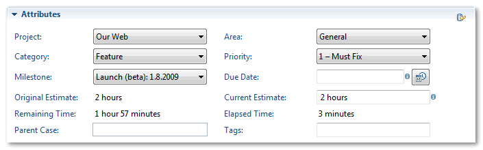
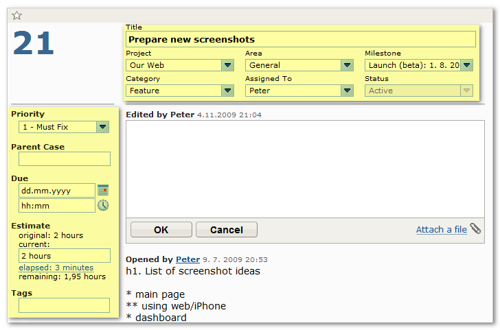
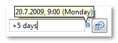
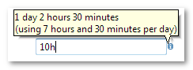

Case Editor: Attributes

Attributes section contains various properties of case like Project, Area or Fix For (milestone), which correspond to highlighted parts in FogBugz web interface:

All attributes can be changed in the editor. Due Date and Current Estimate fields support various formats for entering new values. Supported formats for Due Date field include:
- tomorrow
- next <day of week>, e.g. "next tuesday"
- next week (equals to next monday)
- +N days, e.g. “+3 days” which means three days after today
- +N weeks, e.g. "+2 weeks"
- +N months
- exact date, format depends on your regional settings.
It is also possible to specify exact due time, e.g. tomorrow, 10:30. When time is not specified, start of day is used (as configured in the FogBugz server).
In all cases, exact due date/time that will be sent to FogBugz server is reported in decoration above the field:

Estimate in Current Estimate field should be written as number of days, hours and minutes in following format: “N days, N hours, N minutes”. Numbers without “days”, “hours” or “minutes” unit are treated as hours. Similarly to Due Date field, when entering new estimate, entered value is validated and displayed above the field:

Original Estimate cannot be changed, not even in the FogBugz web interface.
Don’t forget to Submit changes back to the FogBugz repository.
Related Topics: